Quest systems are omnipresent in videogames, and have evolved far beyond the simple "kill 10 goblins in the woods" present in classic RPGs. Nowadays, you can find some kind of quest system in anything from modern RPGs like Cyberpunk 2077 to Metroidvanias like Hollow Knight: Silksong; from sandbox games like Minecraft, to Discord (yes, the social platform).
But how do you go about creating your own quest system for a game? How do you even define a quest in the first place?
To answer this, I have created my own quest design tool and quest system C++ library, Bequestor. In this blog post, I will show how to use this tool for yourself, and for those more technically inclined and interested, there are additional sections on implementation details.
This tool consists of two parts: the Quest Creator, a quest creation tool written in Python in which you can create, edit, import, and export quests to a JSON format; and the Bequestor Library a C++ library which can read this JSON file, store the quests, and update them.
In order to run the quest creator tool, traverse to the quest_creator folder,
create a virtual
environment, open the command prompt, and execute the following commands:
pip install -r requirements.txt
python quest_creation_tool.py
Alternatively, you can run the runme.bat file, which creates a virtual
environment
and executes
the commands for you.
If you use Visual Studio Code, you can also do the following:
Press Ctrl+Shift+P → Python: Create Environment... → Venv → Select
Python
version → check requirements.txt → press OK.
Then simply open quest_creation_tool.py and run it from the editor.
TODO figure this out
When opening the Quest Creator tool, you are greeted with the following screen:
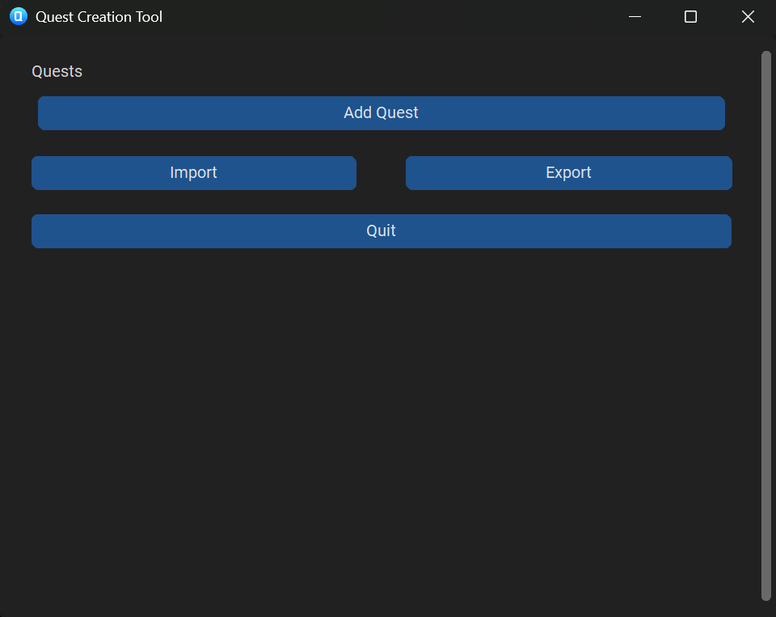You can now press "Add Quest" to add a quest and give it a name and description. You can also collapse or delete your created quest with the buttons to the right. You can add as many quests as you want, but it is recommended to give them different names.
For each quest, you can specify a number of prerequisites. If all of the prerequisites are met, the quest will start. There are 4 preset prerequisite types, and a custom type you can select. For now, let's focus on the presets and specify some prerequisites.
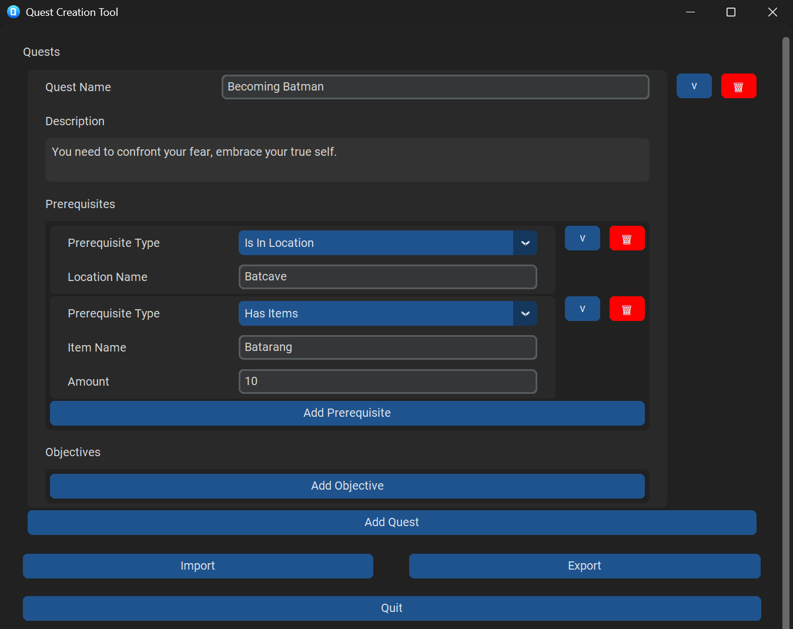Finally, you can specify a number of objectives for a quest. These start updating as soon as the quest is started, and when all (non-optional) objectives are complete, the quest will finish. Once again, we specify some preset objectives. We will discuss custom objectives, dependencies, and optionality later.
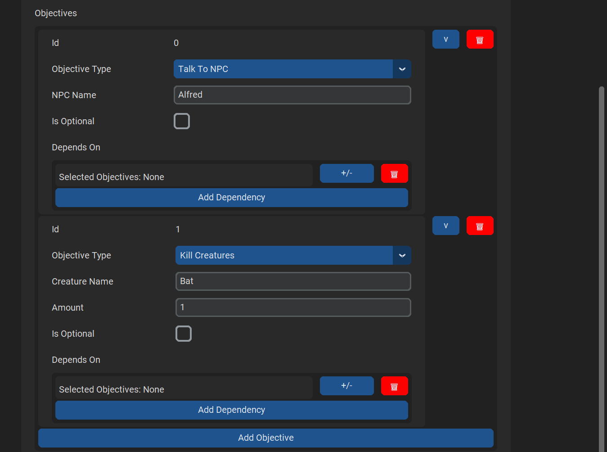You can now export your quest by pressing the "Export" button and specifying a file name and location, and quit the tool by pressing "Quit". If you later want to edit these quests again, just reopen the tool, then press "Import" and select the JSON file to which you exported before.
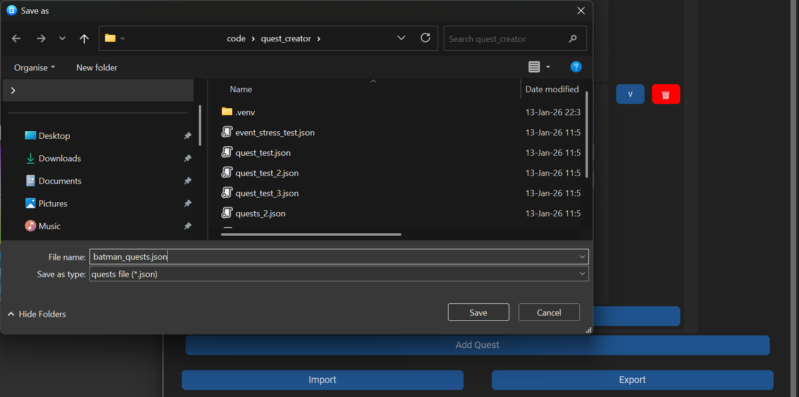
In order to use the Bequestor library in your own game and use the quest you've just created, we first need
to create a QuestManager. In my game's QuestSystem
header file, I declare a
pointer
to it: std::shared_ptr<Bequestor::QuestManager> questManager;.
Then in the constructor implementation (using the std and Bequestor namespaces) I
construct the quest manager, and load in the JSON file we exported earlier.
questManager = make_shared<QuestManager>();
questManager->Load("../quest_creator/batman_quests.json");
You also need to make sure to call QuestManager::Update() whenever you want your
quests to
update.
I call this once per second in my UpdatePerTick() function:
void QuestSystem::UpdatePerTick() { questManager->Update(); }
Running the game right now works, but every second, I get an error message:
No prerequisite checker for Is In Location exists.
In order to check for the quests' prerequisites, we need some way to actually query your game's state.
For each of the prerequisites used, we must supply a PrerequisiteChecker. Luckily,
for the
preset prerequisites this is easy. There are functions available
QuestManager::WithLocationChecker(), QuestManager::WithItemChecker(),
QuestManager::WithExperienceChecker(), and QuestManager::WithGoldChecker(). These
are builder functions and can be called using function chaining. Each of these functions take a function
argument. For the location checker for example, it expects a function that takes the location id and returns
whether the player is in that location. For the item checker the function takes an item id and returns the
number of items of that id that the player has. As an example in my own demo game, which uses an ECS system,
I've replaced questManager = make_shared with the following code:
questManager = make_shared<QuestManager>(
QuestManager()
.WithLocationChecker(
[](string locationName) -> bool
{
for (auto const& [areaEntity, area] : Engine.ECS().Registry.view<Area>().each())
for (auto const& [playerEntity, player, actor] : Engine.ECS().Registry.view<Player, Actor>().each())
if (area.name == locationName && GameUtils::IsInBounds(actor.location, area.bounds)) return true;
return false;
})
.WithItemChecker(
[](string itemName) -> unsigned int
{
auto const& playerEntity = Engine.ECS().Registry.view<Player>().front();
for (auto const& [entity, inventory, item] : Engine.ECS().Registry.view<Inventory, Item>().each())
if (item.type == itemName && inventory.actorId == playerEntity) return item.amount;
return 0;
})
);
Now we can get the active quests with QuestManager::GetActiveQuests(). I gave my
player
the batarangs at the start of the game. In the first image I had not yet entered the "Batcave" area,
so the quest did not show up on my ImGUI panel. In the second image, I had entered the Batcave, and
the quest appeared.
TODO
Now we can start a quest, but we can't finish it yet, because we can't update objectives. In order to do
this, we need to send out events every time an objective should update. This can be done by
having your relevant game class(es) implement the EventDispatcher class, and call
the
Notify() function, giving the appropriate event as an argument. My main game class
implements
the EventDispatcher interface: class Game : public Bequestor::EventDispatcher.
For preset objectives, there are functions available to create events under the ObjectiveEvent
class. MakeNPCEvent() takes the id of the NPC that's interacted with, similar to
MakeLocationEvent(). MakeItemEvent() takes the item id
and the amount of items
collected, similar to MakeKillCreatureEvent(). This is how I send events in my own
game class:
void Game::interactWithNPC(Actor const& npcActor, Actor const& interactingActor)
{
Notify(Bequestor::ObjectiveEvent::MakeNPCEvent(npcActor.name));
// (...)
}void Game::killEnemy(/*(...)*/ Actor const& enemyActor, Actor const& killerActor, Player& player)
{
Notify(Bequestor::ObjectiveEvent::MakeKillCreatureEvent(enemyActor.name, 1u));
// (...)
}
Finally, we need to add our QuestManager as an observer to our EventDispatcher, so
our events are actually handled and the objectives are updated. I simply do this in my game's quest system's
constructor:
QuestSystem::QuestSystem(EventDispatcher& dispatcher)
{
// (...)
dispatcher.AddObserver(questManager);
}In the demo game, I've started the quest by entering the cave. In the first image the player has not yet interacted with the NPC. In the second objective the player did interact with the NPC named "Alfred", and the first objective is shown as being completed. In the third image, the player has killed a bat, and since that satisfies the second objective, the quest is completed and removed from the active quests. The quest log is empty again.
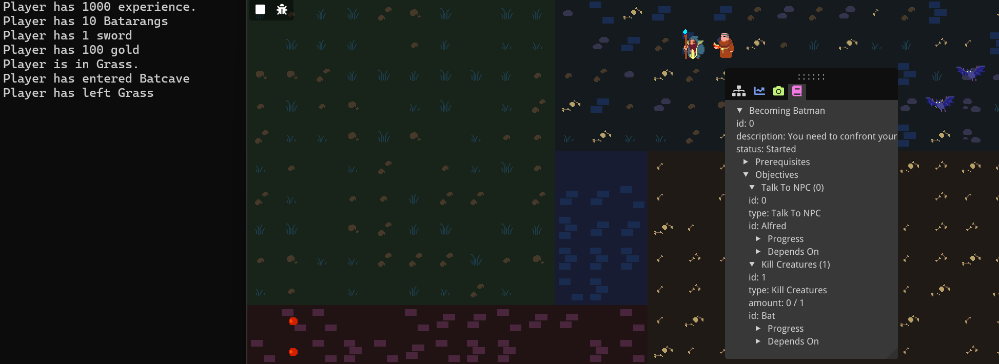 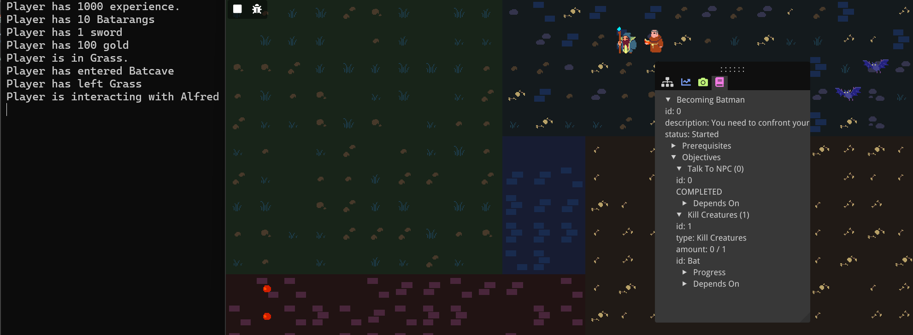 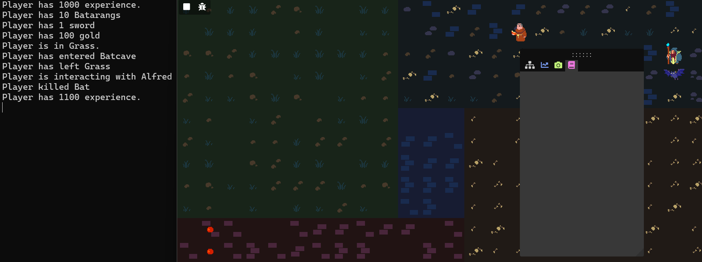TODO
Only being able to create prerequisites or objectives of 4 preset types can be very limiting. Any specific
game would have unique kinds of prerequisites and objectives that need to be specified. The Quest Creator
tool allows for this through custom types and parameters. Let's open the tool, import our
batman_quests.json, and update it to use custom prerequisites and objectives.
I'll remove the
second "Kill Creatures" objective, and replace it with a custom objective. We name the custom type "Do
Nothing" (to become Batman, one must be patient). Now we can add any number of custom parameters. For each
of these parameters we can specify a type, name, and value. Let's add a float named "seconds" and give it
a
value of 5.0. We must do nothing for 5 seconds. Let's also add a custom
prerequisite. To
start
the quest, we can't have walked more than 10 steps. Let's export it again, and overwrite the
batman_quests.json file.
In order to use these custom prerequisites and objectives in our own game implementation, we'll need to
create our own PrerequisiteChecker and ObjectiveChecker. Let's start with the
PrerequisiteChecker. Implementing the PrerequisiteChecker interface requires us
to
implement the IsSatisfied() function. We'll make our own
MaxDistanceWalkedChecker
as follows:
class MaxDistanceWalkedChecker : public Bequestor::PrerequisiteChecker
{
public:
inline MaxDistanceWalkedChecker(int const& distanceWalked) : distanceWalked(distanceWalked) {}
bool IsSatisfied(Bequestor::Prerequisite const& prereq) const override;
private:
int const& distanceWalked;
};
When implementing the IsSatisfied() function, we can get the values of our
custom variables
through the templated Prerequisite::Get() function. In this case, we get an
integer for the
specified "steps" parameter.
bool MaxDistanceWalkedChecker::IsSatisfied(Bequestor::Prerequisite const& prereq) const
{
return distanceWalked < prereq.Get<int>("steps");
}Prerequisites don't keep track of their own state, so instead we provide a reference to a variable in game and save it in a member variable.
Now we just need to register this checker to our QuestManager. For this we can
use the
WithCustomPrerequisiteChecker() function, which takes a string for the name of
the checker
(this needs to be equal to the custom type name specified in the quest creator), and a shared pointer to
your PrerequisiteChecker. We can register the checker as follows (where the
distanceWalked variable is a context variable known by my game):
questManager = make_shared<QuestManager>(
QuestManager()
/*(with preset checkers)*/
.WithCustomPrerequisiteChecker("Walked At Most", make_shared<MaxDistanceWalkedChecker>(distanceWalked))
);In the demo game, you can see from the two images below that now the quest only shows up in the quest log if the player hasn't walked more than 10 steps.
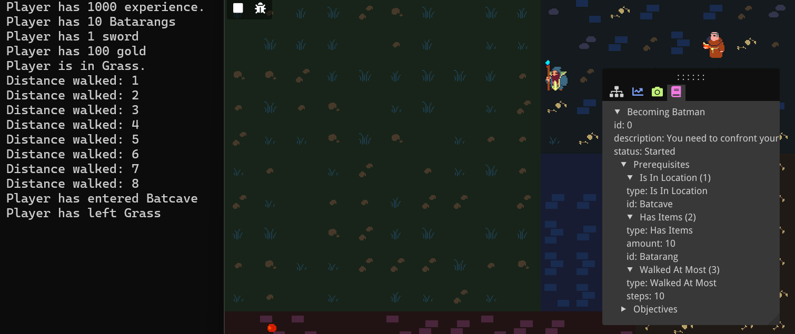 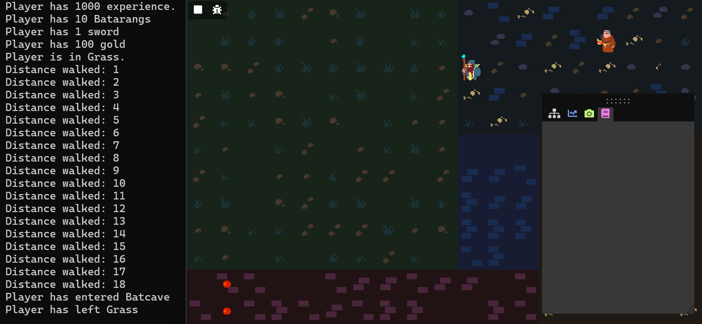Now we do still have the problem that as soon as the quest starts, we are spammed with the following console messages:
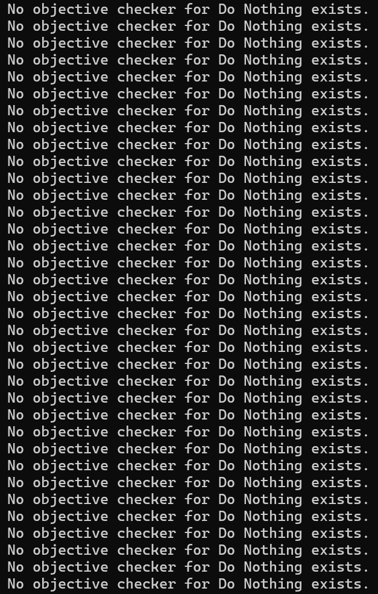
It appears we need to create a custom ObjectiveChecker, too. When implementing
the
ObjectiveChecker interface, we need to implement both the OnEvent() and
IsSatisfied() functions. To accurately measure time, I'm also keeping track of
some variables
using std::chrono.
class DoNothingObjectiveChecker : public Bequestor::ObjectiveChecker
{
public:
DoNothingObjectiveChecker();
void OnEvent(Bequestor::Objective const& objective, Bequestor::ObjectiveEvent const& event) override;
bool IsSatisfied(Bequestor::Objective const& objective) const override;
private:
bool started = false;
std::chrono::high_resolution_clock::time_point lastTime;
float secondsPassed = 0.0f;
};Before implementing these functions, let's see what kind of events we will be sending. We want the time to continuously update when the player does nothing, but to reset if the player does something. Let's distinguish between doing something or nothing with an event parameter. When we do nothing on a frame, we send an event as follows:
void Game::Update(float dt)
{
Bequestor::ObjectiveEvent didNothingEvent = Bequestor::ObjectiveEvent("Do Nothing");
didNothingEvent.AddParameter("Did Something", false);
Notify(didNothingEvent);
}
"Do Nothing" is simply the objective type name. We specify this so the quest manager can find the attached
ObjectiveChecker. We also attach a boolean parameter that we give the name "Did
Something".
We
send an event with a different value for this boolean whenever the player moves or interact.
void Game::handleKeyboardInput()
{ // (if the player moves or interacts:)
Bequestor::ObjectiveEvent didNothingEvent = Bequestor::ObjectiveEvent("Do Nothing");
didNothingEvent.AddParameter("Did Something", true);
Notify(didNothingEvent);
}
Now we can handle this event in our DoNothingObjectiveChecker::OnEvent()
function. We use the
started boolean just so the timer starts running when the first event is caught.
We also set
an
objective state variable, named "seconds". We will have to make sure to register this variable later.
Finally, I'm using the std::chrono namespace.
void DoNothingObjectiveChecker::OnEvent(Objective const& objective, ObjectiveEvent const& event)
{
if (!started || event.Get<bool>("Did Something"))
{
objective.state->Set("seconds", 0.0f);
lastTime = high_resolution_clock::now();
if (!started) started = true;
}
else
{
float secondsPassedSinceLastEvent = duration<float>(high_resolution_clock::now() - lastTime).count();
objective.state->Set("seconds", secondsPassedSinceLastEvent);
}
}
We also have to implement the IsSatisfied() function, where we simply compare
our state
variable to the "seconds" specified in the quest creator (5, in our case):
bool DoNothingObjectiveChecker::IsSatisfied(Objective const& objective) const
{
return objective.state->Get<float>("seconds") >= objective.Get<float>("seconds");
}
Finally, we register our custom ObjectiveChecker to our QuestManager analogous
to
how we did it for the custom PrerequisiteChecker, by using the
QuestManager::WithCustomObjectiveChecker function, which again takes a string
referring to
the
custom type name, and a shared pointer to this time an ObjectiveChecker, but
there is one
more
optional parameter for state parameters and their staring values. We can name these parameters anything we
want, and the type is automatically inferred. We simply name it the same as our objective parameter,
"seconds", with a starting value of 0.0f (indicating it's a float). This is the state variable we were
updating in our DoNothingObjectiveChecker::OnEvent() function. Below is the code
used to
register our custom ObjectiveChecker.
questManager = make_shared<QuestManager>(
QuestManager()
/*(with preset checkers and custom prerequisite checker)*/
.WithCustomObjectiveChecker("Do Nothing", make_shared<DoNothingObjectiveChecker>(), {{"seconds", 0.0f}})
);
Below is a screenshot of my demo game showing the custom objective in progress.
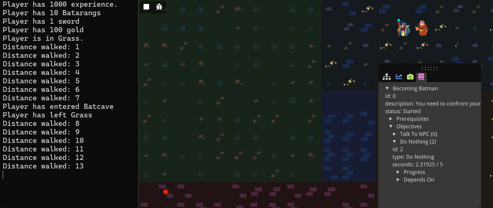TODO
What if we want objectives that depend on one another, or that can branch, have multiple ways of completion? For this we can use objective dependencies. Let's say to complete the quest, the plyer either has to wait 5 seconds, or they have to talk to Alfred and kill a bat. Either way they have to travel outside of the cave to the grassy area to complete the quest.
We open back up the quest in the quest creator. We add objectives for killing a bat, and reaching the
grass
area. Different dependencies represent branches; the current objective can only be started if either of
these dependencies is complete. Within a dependency, we can specify multiple objectives that all
need be complete for the entire dependency to be complete. So, for the "Travel Place" quest, we
press the little "+/-" icon to add or remove objectives to our first dependency, and we add the "Do
Nothing"
objective. Then we add a new dependency, press the "+/-" icon for that dependency, and add both the "Talk
to
Alfred" and "Kill a bat" objectives. The numbers behind the objective correspond to its ID; make sure you
pick the right ones. Finally, we need to mark all objectives but the "Travel Place" objective as
"optional", otherwise the quest will not be marked as complete until all objectives are complete,
regardless
of their individual dependencies. We export once again as batman_quests.json
With these new objectives, we need to make sure we actually send events when we travel to a place, but other than that, we won't have to change anything in the demo game.
void Game::handleAreaUpdates()
{
// (...)
Notify(Bequestor::ObjectiveEvent::MakeLocationEvent(area.name));
// (...)
}
In the demo game, you can see as long as the player hasn't done nothing for 5 seconds and also hasn't both talked to Alfred and killed a bat, the "Travel Place" objective displays a "DEPENDENCIES NOT MET" message. Otherwise, the "Travel Place" objective is active, and the quest will complete upon entering the grass.
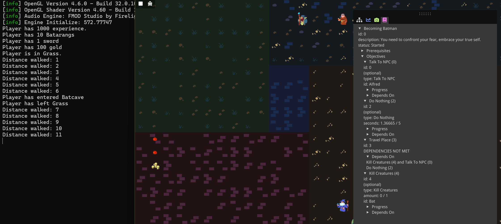 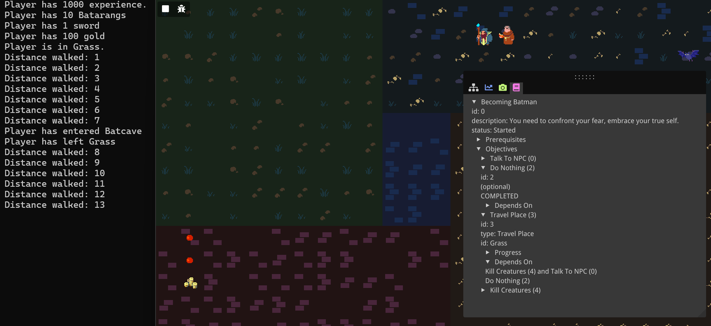 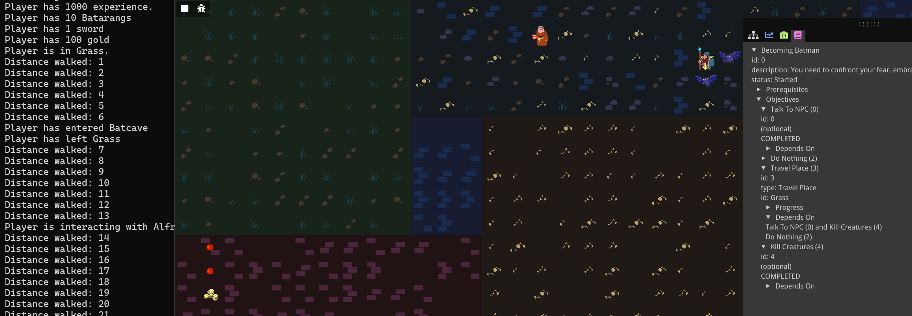 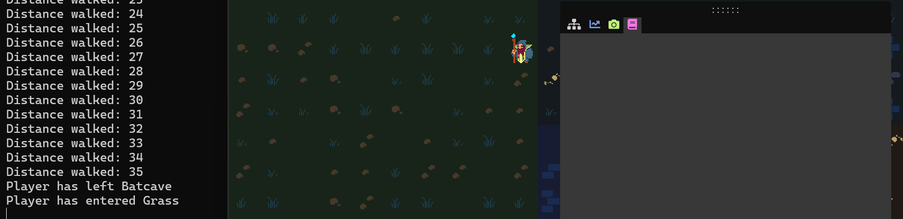In what essentially has been the user guide for Bequestor, we have gone over all the features that the current version of the tool has to offer. We have created quests with prerequisites and objectives that can be preset ones or fully custom ones, and with possible optional objectives and dependencies between objectives. We have then exported these quests to a JSON, and imported them into our own game, using the Bequestor library. We also registered the necessary prerequisite and objective checkers, and parameters, and sent out the appropriate events so our quests update accordingly.
TODO